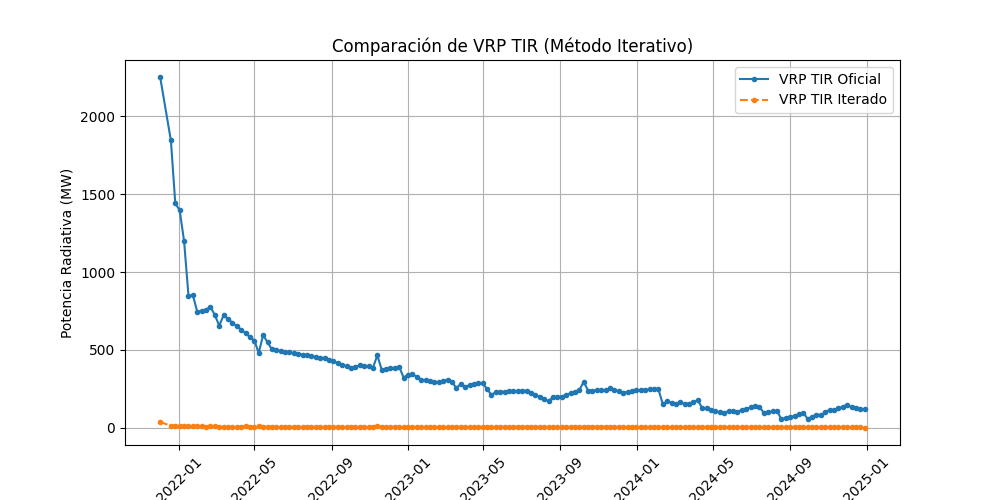
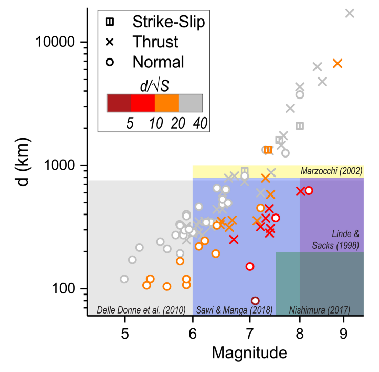

About the Project
This research project, developed by the CSIC, focuses on the monitoring and analysis of volcanic activity in the Canary Islands. The project particularly investigates the Tajogaite volcano eruption in La Palma in 2021, as well as continuous monitoring of the Teide volcano in Tenerife.
We are Physics students from the University of La Laguna, currently undertaking our company internship program (Prácticas de Empresa). This project is part of our training and academic development.
Our team, in collaboration with the CSIC and the University of La Laguna, combines various techniques such as remote sensing, data analysis, and scientific visualization to better understand volcanic processes and improve early warning systems.
Project Goals
Volcanic Monitoring: We aim to analyze brightness temperature and radiance patterns, model post-eruption lava cooling curves (from the 2021 La Palma eruption), and monitor the fumarole fields of Teide volcano using thermal infrared data.
Seismic-Volcanic Relationships: We focus on the global analysis of earthquake-eruption correlations, statistical modeling of eruption triggers, and case studies of notable volcanic eruption sequences.
Seismic Filtering for Volcanic Activation: Part of our work involves filtering and analyzing seismic data to identify earthquake patterns that could potentially lead to volcanic activation, helping to assess early warning signs.
Technical Development: We are developing Python-based tools for satellite data processing, automated visualization pipelines, and machine learning models to aid in eruption prediction and risk assessment.
Data Sources
The primary data sources for this project include:
- NASA LAADS DAAC (MODIS/VIIRS data)
- Copernicus Open Access Hub (Sentinel satellite data)
- USGS Volcano Hazards Program (Seismic and volcanic data)

Radiative Power vs Time
Mapa interactivo del Volcán de Tajogaite
Mapa interactivo de los alrededores del Volcán de Tajogaite
Mapa mundi simplificado con el Volcán Tajogaite

